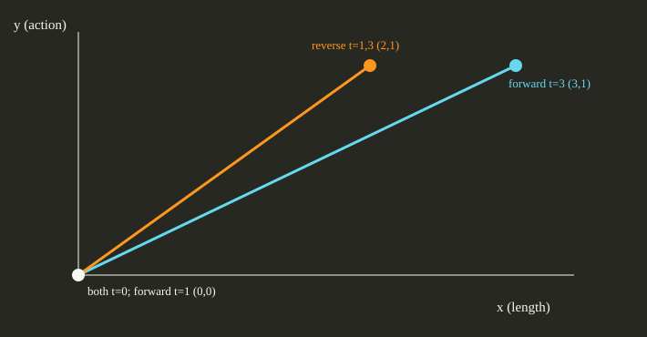

Authored analytic examples on the public CSL::simulation exact-discrete map. Source commit eb4497e08f1532c732163e677d5d7aa03697c7de. This is a sampled simulation of chosen controls, with no nonlinear optimization or historical B04 reproduction claim.
The scalar plant starts at x=0 and applies x[k+1]=x[k]+u[k]+u[k]² at times 0,1,2. Controls (0,1) and (0.5,0.5) both sum to 1 in the separate linear calculation; their original-plant terminal objectives are 2 and 1.5. Each case declares gain=1, constant control on each interval, an exact discrete transition map, and finite 10⁻¹² absolute and relative tolerance metadata. The callback has no independently certified rounding enclosure.
The two-state plant starts at (x,y)=(0,0), times are 0,1,3, and controls are one-dimensional. Its transition is x[k+1]=x[k]+(t[k+1]−t[k])u[k]+u[k]² and y[k+1]=y[k]+u[k]. State units are length and action; terminal x in length is the original objective. Reversing (0,1) to (1,0) changes the terminal state from (3,1) to (2,1).
| Case | Ordered controls | Terminal state | Original objective | Median batch duration |
|---|---|---|---|---|
| plane-forward | [[0.0], [1.0]] | [3.0, 1.0] | 3.0 length | 513,100 ns (range 506,000–537,600) |
| plane-reverse | [[1.0], [0.0]] | [2.0, 1.0] | 2.0 length | 514,000 ns (range 502,500–518,400) |
| scalar-endpoint | [[0.0], [1.0]] | [2.0] | 2.0 dimensionless | 498,200 ns (range 489,800–505,900) |
| scalar-even | [[0.5], [0.5]] | [1.5] | 1.5 dimensionless | 500,700 ns (range 493,300–560,500) |

One excluded warmup batch and seven rotated measured batches per case, each with 1,000 fresh public replay calls. Every call checked the complete literal trajectory, terminal objective, plant name, declared initial state, controls, physical times and status after its measured interval. The batch duration sums the public record's steady-clock replay duration; fixture construction, oracle checks, serialization, process launch and rendering are outside that interval. A single worker and one native thread were requested and used; immutable plant and controls were reused. No internal counter or source-mapped limiter was available. These single-adapter timings are exploratory and support no speedup or broad performance conclusion.
Host: 12th Gen Intel(R) Core(TM) i5-12400F, Windows 11 Home 10.0.22631, MSVC 19.44 x64 Release. No HiGHS or Qhull backend was enabled. The four cases completed all 28,000 measured replay calls with zero recorded failures; smoke and warmup calls are excluded from those totals.
Configure a fresh source checkout at the linked commit with python -m cmake -S . -B build/exp04 -DBUILD_TESTING=OFF -DCSL_ENABLE_HIGHS=OFF -DCSL_ENABLE_QHULL=OFF -DCSL_BUILD_EXP04_REPORT=ON, build target csl_exp04_replay_report in Release, then run it with smoke and measure. The driver source, exact inputs, raw CSV and file hashes are saved here.
The offline bundle is linked from the site catalogue.
Report ID: exp04-replay-c9c239d4bb0bfea1. No fitted archival coefficients or invented control histories are used.